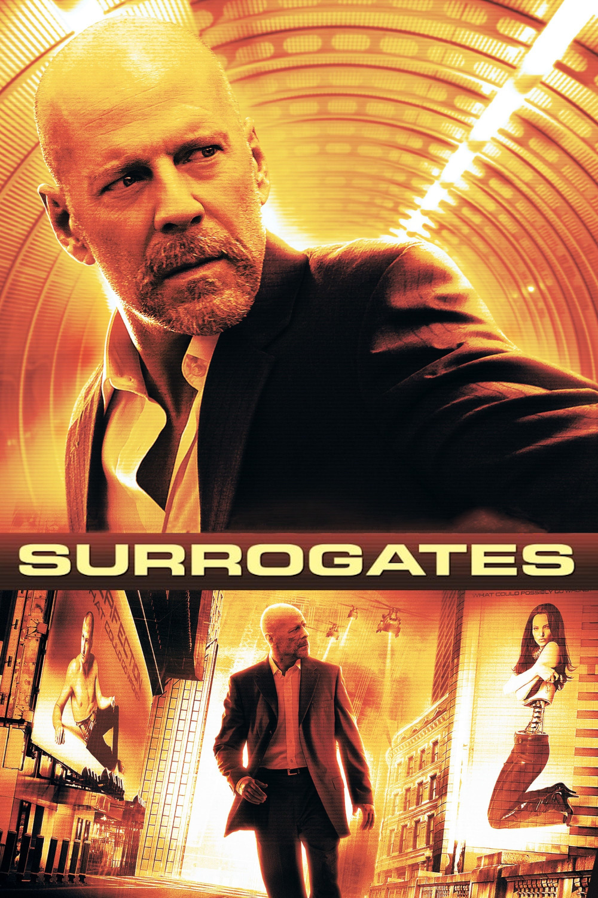

Мировая премьера: 25 сентября 2009
Слоган: Реален только ты.
Сюжет: В недалёком будущем люди живут в обличии физически совершенных роботов-суррогатов, которыми управляют, не выходя из своих безопасных жилищ. Благодаря этой технологии преступления, в том числе убийства, практически исчезли. Но когда погибает студент, связанный с создателем искусственных тел, расследование поручают агенту ФБР. Чтобы раскрыть преступный замысел, ему придётся отказаться от собственного суррогата и вернуться в реальный мир.
Режиссёр: Джонатан Мостоу
В основе: Комикс "Суррогаты" (США, 2005-2006, автор – Роберт Вендитти)
В ролях: Брюс Уиллис, Рада Митчелл, Розамунд Пайк
| Брюс Уиллис | Том Гриер |
| Рада Митчелл | Дженнифер Питерс |
| Розамунд Пайк | Мэгги Гриер |
| Борис Коджо | Энди Стоун |
| Девин Рэтрей | Бобби Сандерс |
| Джеймс Кромвелл | Лайонел Кэнтер |
| Винг Рэймс | Заир "Пророк" Пауэлл |
| Джеймс Фрэнсис Джинти | Молодой Кэнтер |
| Майкл Кудлиц | Полковник Брендон |
| Джек Ноузуорти | Майлз Стрикленд |
Бюджет: $ 80 млн.
Кассовые сборы в США: $ 39 млн.
Кассовые сборы в мире: $ 122 млн.
Продолжительность: 1 ч. 24 мин.
Рейтинг: 6.3